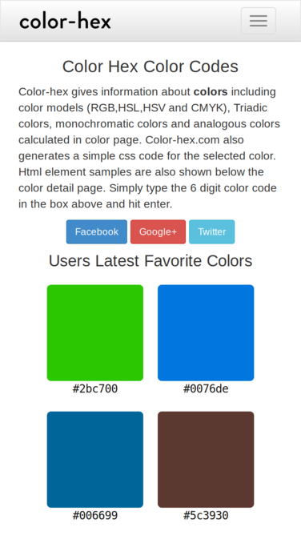
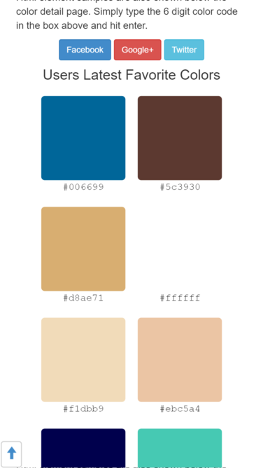
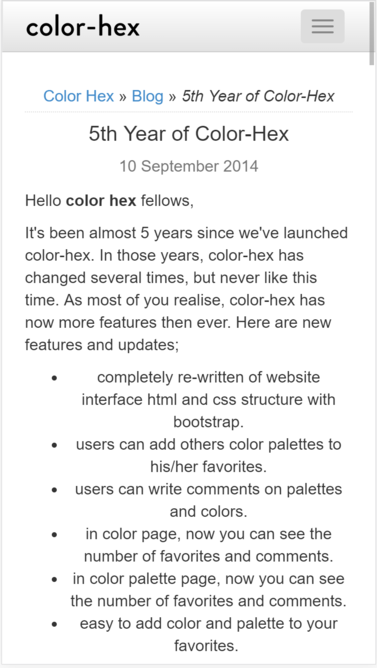
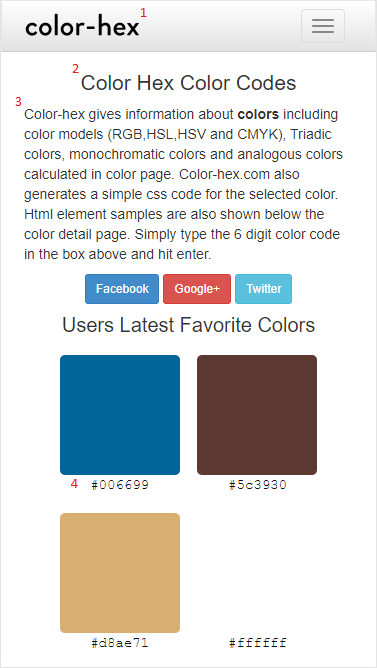

Design - Analysis Assessment
https://www.color-hex.com
Design Principles
Proximity — Brandon Layton
The use of proximity in the site allows for the user to easily understand the different parts of the website. The website effectively groups similar elements together in an easy to understand way. It is not hard to distinguish a different part of the web page from another part. The section that contains the colors is noticeably a different section then the social media links even though they are only separated by whitespace.
Alignment — Justin Wilson
Alignment is well used on the homepage of our chosen website. As can be seen in the screenshot, the color sample elements are aligned vertically and horizontally. Additionally, each of these items are identical in size which makes the alignment look very neat and uniform. The text in the header is also aligned with the text in the body of the page, and the body headers are all centered creating a neat appearance throughout.
Repetition — Jonathan Ruiz
The use of repetition in this site allows the user to recognize the different choices of color within the site. It shows a consistent square filled with the assigned color and the user to can browse through and choose among the recommended colors. By default and without really giving much thought, the user will know that a small square will designate another color.
Contrast — Matt Hare
This website uses contrast by using a white background with black text. This provides a healthy contrast so that makes it easy to read. Additionally, the header is a lighter grey to signify that is a drop down header. Another thing that the site did well is that it clearly shows what the links on the page are in blue.
Typography — Justin Wilson
This site uses four different font styles: one for the site header, one for the body, one for the h1 headers and one for the color hex codes. While four font styles is over the recommended number (3), this is justifiable because the Courier font used for the hex values is understood by developers to represent code, and as such this additional font would make sense to the target audience.
Site Purpose Statement
It will help web designers create color palettes with different color models such as RGB and Hexcode. It also shows CSS examples that are easy to implement into your own CSS code.
Target Audience
- Age: 18-40
- Occupation: Web and Graphic Designers
- Income: Middle class
- Interests: Technology, DIY, Coding, Design
Persona
- Name: Emily Filmore
- Age: 35
- Occupation: Web Designer
- Primary Device: Macbook Pro and iPhone 8
- Quote: “I use my MacBook for working on my client’s websites, but I sometimes use Siri on my iPhone 8 to look up things in a pinch.”